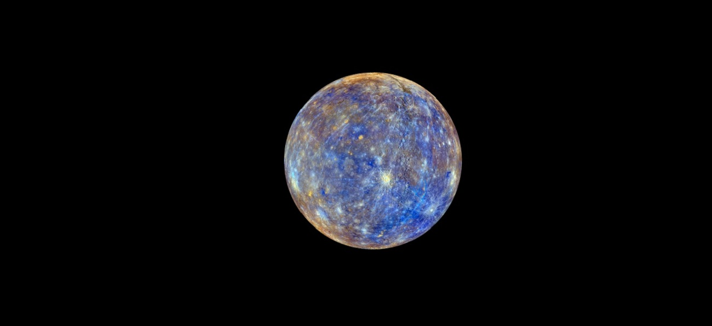
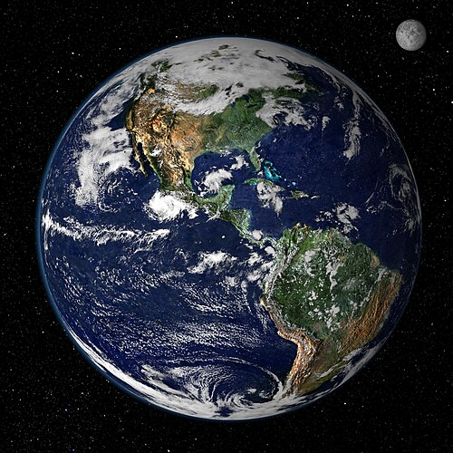
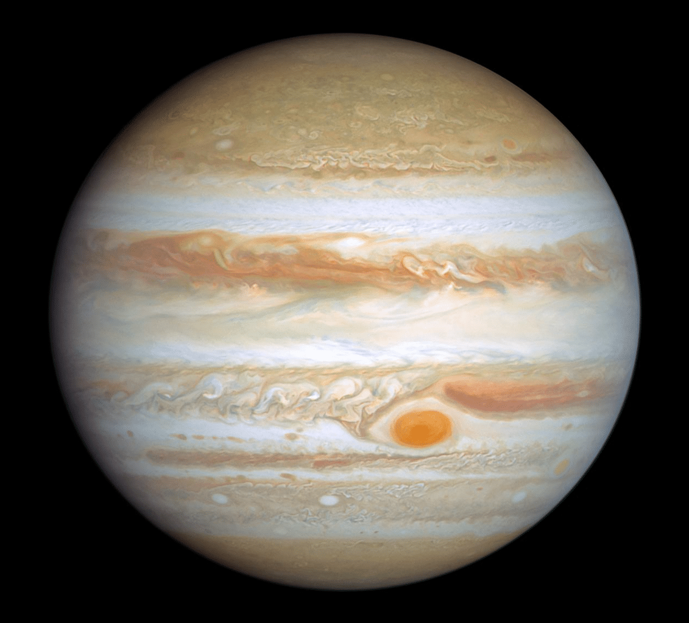
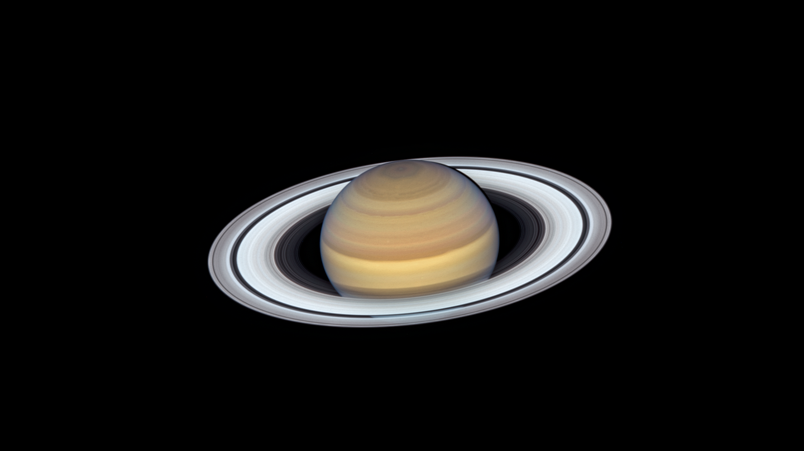
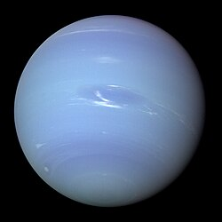
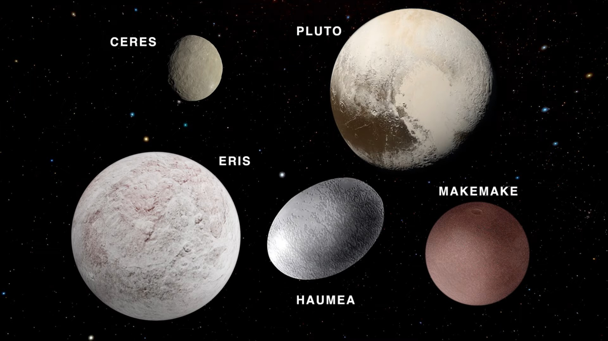
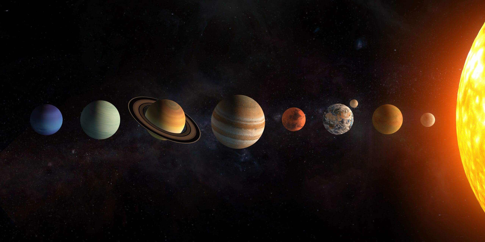

🪐 Solar System
The Sun, eight planets, dwarf planets, moons, and cosmic wonders.

Solar System Overview
The Sun and all objects orbiting it.
The Solar System formed 4.6 billion years ago from a giant cloud of gas and dust.
It contains the Sun, eight planets, dwarf planets, moons, asteroids, comets, and the Kuiper Belt.
⭐ **Moon Counts** • Total moons discovered: 290+ • Jupiter & Saturn have the most
⭐ **Moon Counts** • Total moons discovered: 290+ • Jupiter & Saturn have the most

Mercury
The smallest and fastest planet.
Mercury is the closest planet to the Sun and has no atmosphere to trap heat.
⭐ **Moons: 0** Mercury has no moons because its gravity is too weak and the Sun’s gravity is too strong.
⭐ **Key Facts** • Temperature: −173°C to 427°C • Year length: 88 days
⭐ **Moons: 0** Mercury has no moons because its gravity is too weak and the Sun’s gravity is too strong.
⭐ **Key Facts** • Temperature: −173°C to 427°C • Year length: 88 days

Venus
The hottest planet with a toxic atmosphere.
Venus is covered in thick clouds of sulfuric acid and has crushing pressure.
⭐ **Moons: 0** Venus also has no moons — likely due to early collisions or solar gravitational influence.
⭐ **Key Facts** • Temperature: 465°C • Pressure: 92× Earth
⭐ **Moons: 0** Venus also has no moons — likely due to early collisions or solar gravitational influence.
⭐ **Key Facts** • Temperature: 465°C • Pressure: 92× Earth

Earth
The only known planet with life.
Earth is the only planet with liquid water on the surface and a protective atmosphere.
⭐ **Moons: 1** • **The Moon** — stabilizes Earth’s tilt and controls tides.
⭐ **Key Facts** • Water coverage: 71% • Atmosphere: nitrogen + oxygen
⭐ **Moons: 1** • **The Moon** — stabilizes Earth’s tilt and controls tides.
⭐ **Key Facts** • Water coverage: 71% • Atmosphere: nitrogen + oxygen

Mars
The Red Planet with potential past life.
Mars has the largest volcano and canyon in the Solar System.
⭐ **Moons: 2** • **Phobos** — slowly falling toward Mars • **Deimos** — small and distant
⭐ **Key Facts** • Thin CO₂ atmosphere • Frozen water at poles
⭐ **Moons: 2** • **Phobos** — slowly falling toward Mars • **Deimos** — small and distant
⭐ **Key Facts** • Thin CO₂ atmosphere • Frozen water at poles

Jupiter
The largest planet with powerful storms.
Jupiter is a gas giant with a massive storm called the Great Red Spot.
⭐ **Moons: 95+** • **Ganymede** — largest moon in the Solar System • **Europa** — ocean world • **Io** — volcanic • **Callisto** — ancient crater world
⭐ **Key Facts** • Diameter: 139,820 km • Hydrogen + helium
⭐ **Moons: 95+** • **Ganymede** — largest moon in the Solar System • **Europa** — ocean world • **Io** — volcanic • **Callisto** — ancient crater world
⭐ **Key Facts** • Diameter: 139,820 km • Hydrogen + helium

Saturn
The planet with the most iconic rings.
Saturn’s rings are made of ice and rock.
⭐ **Moons: 146+** • **Titan** — thick atmosphere • **Enceladus** — water geysers • **Mimas** — “Death Star” moon
⭐ **Key Facts** • Density lower than water
⭐ **Moons: 146+** • **Titan** — thick atmosphere • **Enceladus** — water geysers • **Mimas** — “Death Star” moon
⭐ **Key Facts** • Density lower than water

Uranus
The sideways planet.
Uranus rotates on its side due to a massive ancient collision.
⭐ **Moons: 27** • **Titania** • **Oberon** • **Miranda** • **Ariel** • **Umbriel**
⭐ **Key Facts** • Temperature: −224°C • Ice giant
⭐ **Moons: 27** • **Titania** • **Oberon** • **Miranda** • **Ariel** • **Umbriel**
⭐ **Key Facts** • Temperature: −224°C • Ice giant

Neptune
The coldest and windiest planet.
Neptune has supersonic winds and a deep blue color from methane.
⭐ **Moons: 14** • **Triton** — retrograde orbit, likely a captured dwarf planet
⭐ **Key Facts** • Winds: 2,100 km/h • Ice giant
⭐ **Moons: 14** • **Triton** — retrograde orbit, likely a captured dwarf planet
⭐ **Key Facts** • Winds: 2,100 km/h • Ice giant

Dwarf Planets
Small worlds beyond Neptune.
Dwarf planets include Pluto, Eris, Haumea, Makemake, and Ceres.
⭐ **Moons** • Pluto: 5 • Eris: 1 • Haumea: 2 • Makemake: 1 • Ceres: 0
⭐ **Why They Matter** Dwarf planets show the diversity of small worlds.
⭐ **Moons** • Pluto: 5 • Eris: 1 • Haumea: 2 • Makemake: 1 • Ceres: 0
⭐ **Why They Matter** Dwarf planets show the diversity of small worlds.

Solar System Map
Orbits, belts, and cosmic structure.
This map shows the Sun, planets, asteroid belt, Kuiper Belt, and major orbital paths.
⭐ **Includes** • Planet orbits • Asteroid Belt • Kuiper Belt • Comets • Major moons
⭐ **Includes** • Planet orbits • Asteroid Belt • Kuiper Belt • Comets • Major moons